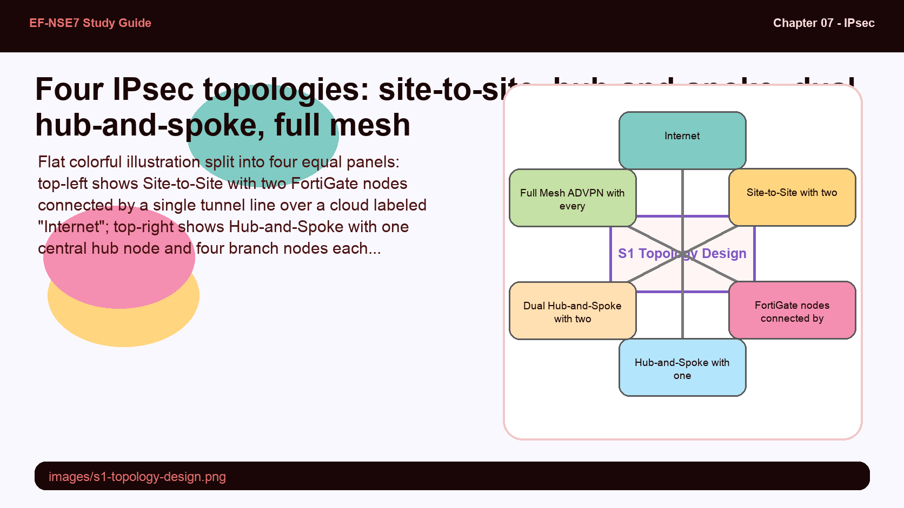
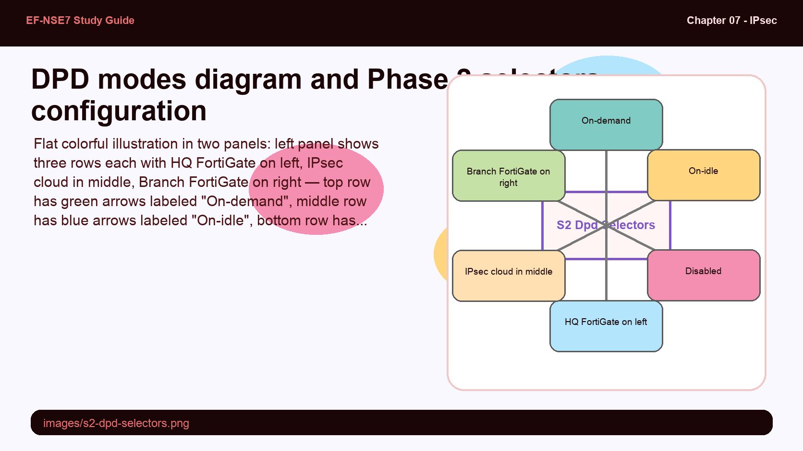
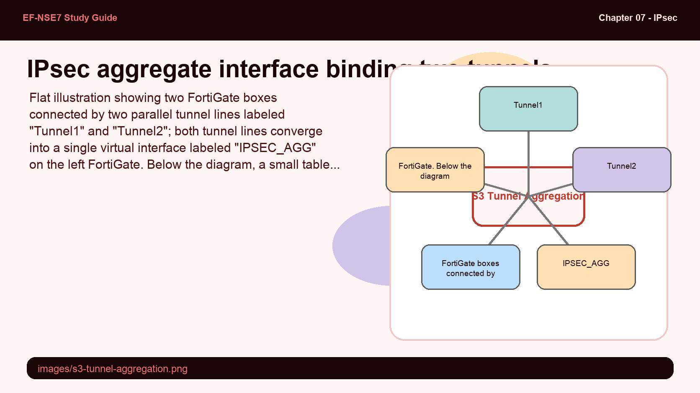
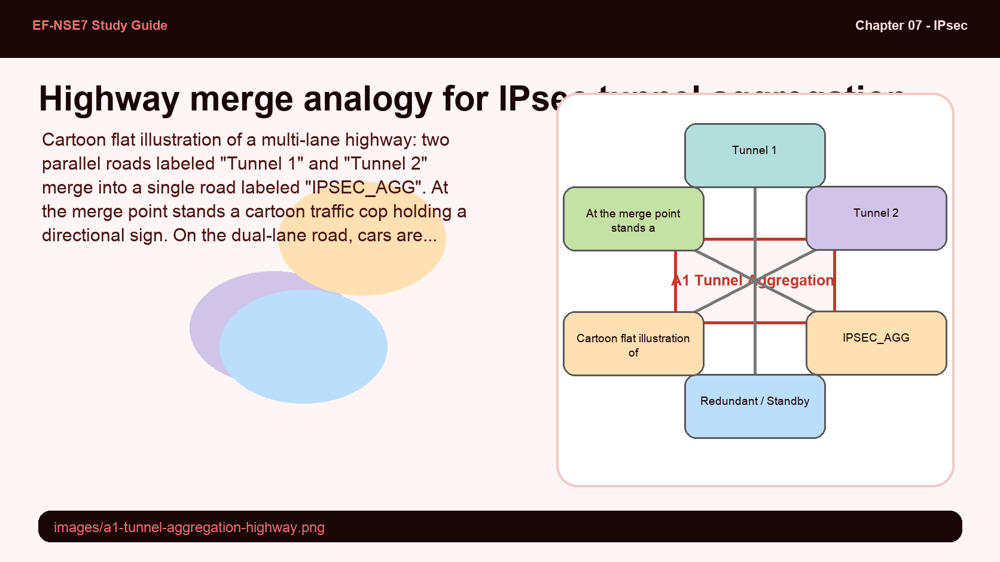
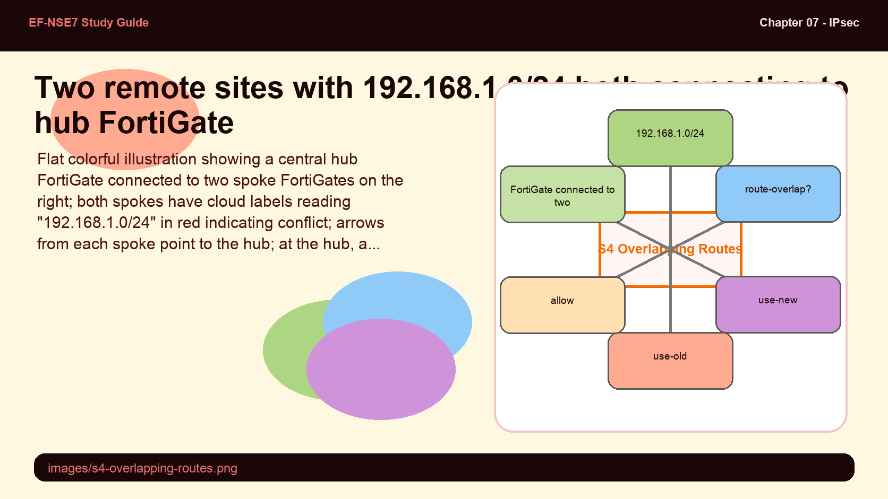
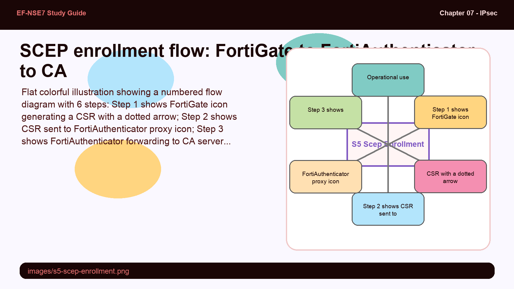

Master IPsec VPN topology design — from site-to-site to full mesh — and learn how FortiGate handles tunnel aggregation, overlapping routes, IP addressing, and certificate-based authentication.
Topology is destiny — pick the wrong one and no amount of tuning saves you.
This subtopic covers the design decisions that underpin every IPsec deployment: topology type, redundancy, Phase 2 segmentation, and route conflict resolution.
💭THINK FIRST · TOPOLOGY DESIGN
IPsec VPN topology is not just a physical diagram — it determines scaling, failover behavior, and policy complexity. A hub-and-spoke saves tunnel count but creates a single point of failure. Full mesh eliminates that, but at the cost of O(n²) tunnel growth.
When would you choose hub-and-spoke over full mesh, and what happens to spoke-to-spoke traffic in hub-and-spoke that does not exist in full mesh?
What does "dual hub-and-spoke" buy you compared to single hub-and-spoke, and what does it cost in tunnel overhead?
Q1 — MODEL ANSWER
Hub-and-spoke is preferred when branches need to communicate with HQ but rarely with each other, and when minimizing tunnel count matters (n tunnels vs. n(n-1)/2). In hub-and-spoke, spoke-to-spoke traffic must traverse the hub — adding latency and loading the hub FortiGate's policy engine with traffic it originates from neither endpoint.
Q2 — MODEL ANSWER
Dual hub-and-spoke provides redundancy: if one hub fails, spokes fail over to the second hub. The cost is that each spoke now maintains two tunnels instead of one, and hub failure detection depends on correctly tuned DPD. Without dual hub, a single hub outage takes down all branch connectivity simultaneously.
SECTION 01
IPsec VPN Topology Design

📷 images/s1-topology-design.png
Four IPsec VPN topology patterns and when to choose each.
Flat colorful illustration split into four equal panels: top-left shows Site-to-Site with two FortiGate nodes connected by a single tunnel line over a cloud labeled "Internet"; top-right shows Hub-and-Spoke with one central hub node and four branch nodes each connected by a separate tunnel to the hub; bottom-left shows Dual Hub-and-Spoke with two hub nodes at center and branches connecting to both; bottom-right shows Full Mesh ADVPN with every node connected to every other node. Pastel palette, bold outlines, short labels, no shadows, educational infographic feel.
When designing an IPsec VPN topology, you must consider scalability, redundancy, security algorithms, and the firewall model at each site. FortiGate supports four primary topologies: site-to-site, hub-and-spoke, dual hub-and-spoke, and full mesh (ADVPN).
Site-to-site is the simplest — one tunnel, two endpoints. Hub-and-spoke centralizes traffic through a headquarters device, reducing the number of tunnels required as the branch count grows. Dual hub-and-spoke adds a second HQ device for redundancy. Full mesh via ADVPN creates direct spoke-to-spoke tunnels on demand, eliminating hub bottlenecks but requiring careful routing configuration.
The number of tunnels also depends on the type of traffic traversing the IPsec tunnel and the firewall model deployed. A branch-model firewall may support fewer concurrent tunnels than a campus-core model, making topology choice a hardware decision as much as a design one.
Exam tip: Full mesh topologies use ADVPN (Auto-Discovery VPN) to build spoke-to-spoke shortcuts dynamically. Standard full mesh would require pre-configuring n(n-1)/2 tunnels — operationally unacceptable at scale.
🧠
MENTAL NOTE
4 topology types: site-to-site, hub-and-spoke, dual hub-and-spoke, full mesh (ADVPN). Hub-and-spoke = n tunnels; full mesh = n(n-1)/2 tunnels. Always match topology to firewall hardware capacity and traffic patterns.
ASK A QUESTION
ADD A NOTE
💭THINK FIRST · DPD & PHASE 2 SELECTORS
Dead Peer Detection (DPD) and Phase 2 selectors solve two different problems in IPsec stability. DPD detects when a remote peer has gone silent. Phase 2 selectors define exactly which traffic flows are encrypted through a given SA.
What is the difference between DPD on-demand and DPD on-idle, and in which scenario would on-idle cause unnecessary overhead?
Why would using all-zeros (0.0.0.0/0.0.0.0) in Phase 2 selectors be risky in a multi-site hub environment?
Q1 — MODEL ANSWER
On-demand sends DPD probes only when outbound traffic is waiting but no response arrives — ideal for unpredictable traffic patterns. On-idle sends probes whenever the tunnel is idle for a defined interval, which wastes bandwidth in environments where tunnels are legitimately quiet most of the time (e.g., a backup-only tunnel).
Q2 — MODEL ANSWER
All-zeros selectors mean "encrypt everything," which prevents the hub from distinguishing traffic destined for different spokes. When multiple spokes advertise the same subnet (overlapping routes), all-zeros selectors create ambiguous route entries and can cause invalid-path blackholing. Explicit subnet selectors let the hub route correctly to the right spoke.
SECTION 02
DPD Modes and Phase 2 Selectors

📷 images/s2-dpd-selectors.png
DPD on-demand, on-idle, and disabled — and how Phase 2 selectors define encrypted traffic.
Flat colorful illustration in two panels: left panel shows three rows each with HQ FortiGate on left, IPsec cloud in middle, Branch FortiGate on right — top row has green arrows labeled "On-demand", middle row has blue arrows labeled "On-idle", bottom row has gray dotted line labeled "Disabled"; right panel shows a Phase 2 selector table with rows listing local subnet, remote subnet, and example values. Pastel palette, bold outlines, educational infographic feel.
Dead Peer Detection (DPD) is essential for VPN stability by detecting unreachable peers. FortiGate supports three DPD modes: on-demand, on-idle, and disable.
On-demand: Sends probes only when outbound traffic is queued but no reply arrives. Best for unpredictable or bursty traffic patterns.
On-idle: Sends probes at regular intervals when the tunnel is idle. Best for networks with predictable, regular traffic that need fast failover detection.
Disable: No probes. Suitable only in highly stable networks where DPD overhead is unwarranted.
The default DPD retry count is 3 with a retry interval of 20 seconds. In full-mesh and hub-and-spoke topologies, DPD mode significantly impacts performance and reliability — on-demand prevents unnecessary probe traffic in high-node-count meshes.
Phase 2 selectors specify which local and remote network segments are encrypted over a single Phase 1 tunnel. Multiple Phase 2 selectors can operate over one Phase 1 SA, letting you segment traffic by subnet. You can configure selectors by IP address, subnet, or IP range. Using all-zeros (0.0.0.0/0) as selectors is tempting for simplicity, but causes routing ambiguity in environments with overlapping subnets — particularly during migrations.
Exam warning: Phase 2 selectors with all zeros (0.0.0.0/0) risk invalid-path issues when multiple spokes share the same subnet. Use routing protocols over the tunnel to specify allowed subnets instead.
🧠
MENTAL NOTE
DPD: 3 modes (on-demand, on-idle, disable); default retry=3, interval=20s. Phase 2: multiple selectors per Phase 1 SA. Selector = (local subnet, remote subnet). Avoid 0.0.0.0/0 selectors in multi-spoke deployments with overlapping subnets.
ASK A QUESTION
ADD A NOTE
💭THINK FIRST · TUNNEL AGGREGATION
IPsec tunnel aggregation groups multiple tunnels under a virtual interface — much like LACP bonds physical links. This provides both redundancy and load distribution, but the choice of balancing algorithm determines which traffic property drives the distribution decision.
What is the functional difference between L3 and L4 load balancing in IPsec aggregation, and when would you prefer one over the other?
If one tunnel in an aggregate fails, what happens to in-flight sessions, and which algorithm minimizes disruption?
Q1 — MODEL ANSWER
L3 balances based on source/destination IP — good for ensuring consistent path per session. L4 adds port information, providing finer-grained distribution across more flows. L4 is preferable when many sessions share the same IP pair (e.g., a server farm) and you want to spread load across tunnels. L3 is simpler and more predictable for general traffic.
Q2 — MODEL ANSWER
When a tunnel fails, in-flight sessions using that tunnel will be disrupted and must re-establish over the remaining tunnels. The "redundant" algorithm minimizes this by always sending all traffic through the first active tunnel — there is no rebalancing needed, just a failover to the next member, which is already warm.
SECTION 03
IPsec Tunnel Aggregation

📷 images/s3-tunnel-aggregation.png
Two IPsec tunnels bound into one aggregate interface with weighted round-robin balancing.
Flat illustration showing two FortiGate boxes connected by two parallel tunnel lines labeled "Tunnel1" and "Tunnel2"; both tunnel lines converge into a single virtual interface labeled "IPSEC_AGG" on the left FortiGate. Below the diagram, a small table shows five load balancing algorithm names: round-robin, L3, L4, redundant, weighted-round-robin. Pastel blue and green palette, bold outlines, minimal text, educational infographic feel.
IPsec tunnel aggregation lets you bind multiple IPsec tunnels into a single virtual aggregate interface — the same concept as LACP for Layer 2 links. You need at least two tunnels as aggregate members.
Aggregation provides two benefits: redundancy (if one tunnel fails, traffic continues on the others) and load distribution across member tunnels. Five load balancing algorithms are available:
Round-robin: Traffic balanced per packet.
L3: Balanced based on Layer 3 (IP) header information.
L4: Balanced based on Layer 4 (port) header information.
Redundant: All traffic through the first active tunnel; others serve as standby backups.
Weighted-round-robin: Round-robin adjusted by per-tunnel weight values.
FortiGate CLI — IPsec Aggregate
config system ipsec-aggregate
edit "IPSEC_AGG"
set member "Tunnel1" "Tunnel2"
set algorithm weighted-round-robin
next
end
🧠
MENTAL NOTE
Aggregate requires minimum 2 tunnels. 5 algorithms: round-robin, L3, L4, redundant, weighted-round-robin. "Redundant" = active/standby; all others = active/active load sharing. Configure under config system ipsec-aggregate.
Analogy
IPsec tunnel aggregation is like a multi-lane highway merger — multiple roads become one flow, with traffic cops deciding which lane each car takes.
Tunnel1 / Tunnel2 — individual lanes of the highway, each capable of carrying traffic independently
IPSEC_AGG interface — the merge point where all lanes funnel into one logical road
Load balancing algorithm — the traffic cop assigning cars to lanes based on their destination, license plate (IP), or random rotation
Redundant mode — one lane is always open; the other is a breakdown lane used only if the main lane closes

📷 images/a1-tunnel-aggregation-highway.png — add this image to the folder
Cartoon flat illustration of a multi-lane highway: two parallel roads labeled "Tunnel 1" and "Tunnel 2" merge into a single road labeled "IPSEC_AGG". At the merge point stands a cartoon traffic cop holding a directional sign. On the dual-lane road, cars are labeled with different IP addresses. To the right of the merge, the single road continues toward a FortiGate device icon. One lane has a flashing orange cone labeled "Redundant / Standby". Pastel orange, blue, and green palette, bold outlines, short text labels, educational infographic feel, no shadows.
ASK A QUESTION
ADD A NOTE
💭THINK FIRST · OVERLAPPING ROUTES
When two remote sites share the same subnet (e.g., both use 192.168.1.0/24), a hub FortiGate faces a routing conflict — it cannot know which spoke should receive traffic for that subnet. The route-overlap setting determines how FortiGate resolves the conflict.
What is the default route-overlap behavior, and why might it cause unexpected tunnel drops during a migration where a new site comes online with a duplicate subnet?
When would you use route-overlap allow with SD-WAN, and what additional configuration is required to prevent interface instability?
Q1 — MODEL ANSWER
The default is use-new, which disconnects the existing dialup VPN and accepts the new one. During migration, this means a new site with a duplicate subnet will silently drop the existing site's tunnel. The original site loses connectivity with no error message on the hub — making this a critical gotcha during staged rollouts.
Q2 — MODEL ANSWER
With route-overlap allow, both VPNs remain active and traffic is ECMP load-balanced. In SD-WAN with multiple egress interfaces, not setting this on the hub can cause interfaces to oscillate between active and dead states, because the hub cannot consistently recognize which interface belongs to which tunnel. You must explicitly set "set route-overlap allow" on the hub Phase 2 config to prevent instability.
SECTION 04
Overlapping Routes and IPsec Interfaces

📷 images/s4-overlapping-routes.png
Route-overlap scenario: two spokes share the same subnet, hub must choose behavior.
Flat colorful illustration showing a central hub FortiGate connected to two spoke FortiGates on the right; both spokes have cloud labels reading "192.168.1.0/24" in red indicating conflict; arrows from each spoke point to the hub; at the hub, a decision diamond labeled "route-overlap?" branches into three options: "use-new", "use-old", "allow". Pastel palette, bold outlines, short labels, educational infographic feel.
When two remote sites use identical subnets, the hub FortiGate faces a route-overlap conflict. In Phase 2, the route-overlap parameter controls what happens when a new dialup VPN connects with a subnet that already exists:
use-new (default): Disconnects the existing VPN and accepts the new one.
use-old: Maintains the existing VPN and rejects the new connection.
allow: Keeps both VPNs active; traffic is ECMP load-balanced between them.
FortiGate CLI — Phase 2 Route Overlap
config vpn ipsec phase1-interface
edit Phase1
set type dynamic
end
config vpn ipsec phase2-interface
edit Phase2
set phase1name Phase1
set route-overlap allow
next
end
IPsec VPN interfaces do not require an IP address by default. However, assigning one enables: traffic identification for tunnel establishment, ADVPN peer discovery, and easier management and troubleshooting. When NAT is applied to an IPsec interface, packets use the IPsec interface IP — not the physical WAN address.
Exam warning: In SD-WAN with multiple egress interfaces, not enabling route-overlap allow on the hub can cause interfaces to falsely toggle between active and dead states — especially if defaults are not adjusted during FortiOS upgrades.
🧠
MENTAL NOTE
route-overlap default = use-new (drops existing VPN). Options: use-new, use-old, allow. IPsec interfaces: no IP required by default; assign one for ADVPN discovery, NAT, and troubleshooting. NAT on IPsec uses the interface IP, not the WAN IP.
ASK A QUESTION
ADD A NOTE
💭THINK FIRST · CERTIFICATES & SCEP
Pre-shared keys are simple but carry a significant risk: if the key is compromised, every tunnel using it is vulnerable, and rekeying requires manual changes across all devices. Certificate-based authentication with SCEP automates the enrollment and renewal cycle — eliminating the manual key-distribution problem at scale.
Why is certificate-based authentication considered stronger than pre-shared keys for IPsec, and what does the "peer certificate" field accomplish during tunnel establishment?
What role does FortiAuthenticator play in the SCEP enrollment process, and why is it called a "proxy" in this workflow?
Q1 — MODEL ANSWER
Certificate-based authentication uses asymmetric cryptography — the private key never leaves the device, so compromise of the network doesn't expose it. The "peer certificate" field on the FortiGate specifies which certificate (or CA) the remote peer must present, enabling mutual authentication. Pre-shared keys are symmetric and must be distributed to all peers — creating key-management overhead and a shared secret risk.
Q2 — MODEL ANSWER
FortiAuthenticator acts as a SCEP server proxy: it receives the CSR from FortiGate, forwards it to the actual CA, and returns the signed certificate. This intermediary role means FortiGate doesn't need direct internet access to a public CA — FortiAuthenticator handles the CA communication, automates enrollment, and reduces manual certificate management in large deployments.
SECTION 05
Certificate Authentication and SCEP Enrollment

📷 images/s5-scep-enrollment.png
SCEP automated certificate enrollment: 6-step flow from FortiGate CSR to operational certificate.
Flat colorful illustration showing a numbered flow diagram with 6 steps: Step 1 shows FortiGate icon generating a CSR with a dotted arrow; Step 2 shows CSR sent to FortiAuthenticator proxy icon; Step 3 shows FortiAuthenticator forwarding to CA server icon; Step 4 shows CA signing and returning certificate; Step 5 shows signed cert returned through FortiAuthenticator to FortiGate; Step 6 shows FortiGate with a green shield icon labeled "Operational use". Pastel blue and teal palette, numbered circles at each step, bold outlines, no shadows, educational infographic feel.
For IPsec Phase 1 authentication, FortiGate supports two methods: pre-shared key and digital signature (certificate). Certificates provide stronger authentication because the private key never leaves the device — unlike a pre-shared key that must be configured identically on both sides.
To use certificate authentication, select the certificate and the peer certificate (the certificate the remote peer must present). Ensure you use a certificate signed by a valid Certificate Authority (CA). You can also import custom CA certificates.
For large deployments, SCEP (Simple Certificate Enrollment Protocol) with FortiAuthenticator automates certificate lifecycle management. The 6-step SCEP workflow is:
Configure FortiGate with the SCEP server URL and credentials.
FortiGate generates a CSR (Certificate Signing Request) containing its public key and identity.
The SCEP server (FortiAuthenticator) proxies the CSR to the CA.
The CA validates and signs the certificate.
The signed certificate is returned to FortiGate via the SCEP server.
FortiGate installs the certificate and uses it for VPN, management, and other secure functions.
Note: SCEP enrollment happens under System > Certificates on FortiGate. Select "Online SCEP" as the enrollment method and provide the CA server URL and challenge password.
🧠
MENTAL NOTE
Certificate auth = private key stays on device (stronger than PSK). SCEP = 6-step automated enrollment via FortiAuthenticator proxy. FortiAuthenticator is the SCEP server — it proxies CSR to CA and returns signed cert. Configure at System > Certificates with "Online SCEP" method.